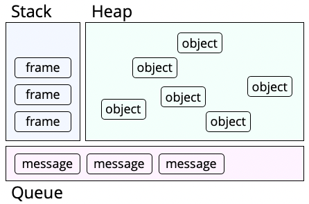

Web
Async, REST, HTTPS
## <i class="fas fa-tasks"></i> Overview of Today's Class - Asynchronous Programming - Rest - HTTPS
Quiz
## <i class="fas fa-question-circle"></i> Question 1 Parmi les architectures suivantes, la ou lesquelles gardent une connexion ouverte? - Polling - Long-Polling - Server-Sent Events - WebSocket - Aucune réponse correcte
## <i class="fas fa-question-circle"></i> Question 2 Cochez les affirmations correctes à propos de l'API EventStream (SSE). - Lorsque le serveur ferme la connexion, le navigateur essaie de se reconnecter automatiquement. - Lorsque le navigateur ferme la connexion, le serveur essaie de se reconnecter automatiquement. - Un méchanisme de callback permet d'observer l'état de la connexion ('open', 'close'). - Le navigateur transmet les message au serveur à l'aide du 'Chunked transfer encoding'. - Aucune affirmation correcte
## <i class="fas fa-question-circle"></i> Question 3 Vous souhaitez implémenter une stratégie de type Long-Polling pour communiquer avec un serveur (`www.example.com`). Parmi les programmes suivant, lequel implémente cette stratégie? - ``` var conn = new EventStream("http://www.example.com"); ``` - ``` setInterval(function () { fetch("http://www.example.com") .then(doSomething) }, 1000); ``` - ``` var conn = new WebSocket("http://www.example.com"); ``` - ``` function get() { fetch("http://www.example.com") .then(() => { doSomething(); get(); }) }; ```
Asynchronous Programming
## <i class="fab fa-js"></i> Synchronous vs Asynchronous Programming ### Synchronous Programming Things happen **sequentially**, one at a time. Long-running actions are **blocking**: the program stops until the action has finished. ### Asynchronous Programming Things happen **in parallel**, multiple at the same time. Long-running actions are **non-blocking** : they are started in the background while the program continues to run. When the background action has completed, two approaches: - The program was waiting and gets the result back *(e.g. `await`)* - The action was given a callback describing the next action *([Continuation-Passing Style](https://bessiambre.medium.com/continuation-passing-style-patterns-for-javascript-5528449d3070))* Notes: See also **Eloquent Javascript** - https://eloquentjavascript.net/11_async.html#h_HH3wvnWMnd
## <i class="fab fa-js"></i> Multi-thread synchronous *vs* asynchronous **Multi-threaded synchronous model**: multiple synchronous threads in parallel. Long-running actions remain **blocking**: the time they take to execute is part of the timeline. **Asynchronous model**: long-running actions can be **non-blocking**. A **fork** occurs in the timeline: the program continues while the long-running action runs in the background. <img src="images/async.svg" /> When the long-running action terminates, it uses a **callback** function to continue the execution of the program.
## <i class="fab fa-js"></i> The Event Loop In JavaScript, **asynchronous actions** are put in a **message queue** which is part of the runtime environment.  The **message queue** is a list of **asynchronous actions** to be processed by the **event loop**. ```js // The Event Loop, pseudocode while (queue.waitForMessage()) { queue.processNextMessage(); } ``` When processing messages, the **event loop** initializes a **stack** dedicated to the execution of the **asynchronous action**. Upon termination, the event loop notifies the main program through a mechanism of **callbacks**. https://developer.mozilla.org/en-US/docs/Web/JavaScript/EventLoop
## <i class="fas fa-hand-paper"></i> Example! In browsers, `setTimeout`, `setInterval`, event listeners and HTTP requests, typically append messages to the **message queue** of the runtime. What is the output produced by the following programm? ```js setTimeout(function() { console.log("a") }, 10); console.log("b"); setTimeout(function() { console.log("c"); }, 20); console.log("d"); ``` https://developer.mozilla.org/en-US/docs/Web/JavaScript/EventLoop Notes: - `setTimeout` takes a callback and a delay as arguments, and executes that callback after that delay. - `SetInterval` takes a callback and a delay as arguments, and executes that callback every time that delay passes.
## <i class="fab fa-js"></i> Callback Hell Asynchronous programming with callbacks can result in a so-called **callback hell**. ```js function countDown(arg, callback) { console.log(arg); setTimeout(callback, 1000); } countDown("five...", function() { countDown("four...", function() { countDown("three...", function() { countDown("two...", function() { countDown("one...", function() { console.log("fire!!!"); }); }); }); }); }); ``` The introduction of **asynchronous programming** constructs in the JavaScript language (such as `Promise`, `async`, `await`) helps at adressing this issue.
## <i class="fab fa-js"></i> Promise A `Promise` represents the eventual completion (or failure) of an **asynchronous** operation, and its resulting value. In other words, a `Promise` is a proxy for a value that is not necessarily known when the promise is created. ```js var promise = Promise.resolve("Hello, World!"); ``` A `Promise` is in one of these states: - `pending`: initial state, neither fulfilled nor rejected. - `resolved`: meaning that the operation completed successfully. - `rejected`: meaning that the operation failed. A promise is said to be `settled` if it is either `resolve` or `rejected`. https://developer.mozilla.org/en-US/docs/Web/JavaScript/Reference/Global_Objects/Promise
## <i class="fab fa-js"></i> Promise The constructor of a promise receives an `executor`, a function that is passed with the arguments `resolve` and `reject`. `resolve` and `reject` are functions that can be used to `settle` the promise. ```js let promise = new Promise(function(resolve, reject) { setTimeout(function() { if (Math.random() > 0.5) { resolve(42); } else { reject("The ultimate question to life, the universe and everything has no answer!") } }, 1000); }); ``` https://developer.mozilla.org/en-US/docs/Web/JavaScript/Reference/Global_Objects/Promise
## <i class="fab fa-js"></i> Promise "chaining" Methods `then` and `catch` on `Promise` allow us to "map" the settlement of a promise, i.e. provide a function to be applied on it. - `then` takes two functions, to be applied to the eventual resolution or failure of the promise. - `catch` takes a single function to be applied to the eventual failure of the promise. These functions return a new Promise, allowing to chain them. ```js promise.then(onFulfillment, onRejection).catch(onRejection).then(...).catch(...); ``` <img src="images/js_promises.png" style="width: 60%;" /> https://developer.mozilla.org/en-US/docs/Web/JavaScript/Reference/Global_Objects/Promise Notes: In theory of programming languages, a `map` is an operation on a wrapper object that applies a modifier function to the wrapped object(s). A `map` is often thought of is the context of collections, where the function is applied to all elements of the collection, but it is also applicable to many other contexts: we can "map" the content of an `Optional` in Java, or the resolution of a `Promise` in JavaScript.
## <i class="fab fa-js"></i> Promise Helpers The `Promise` object comes with useful helper methods, all returning a new promise. - `Promise.all(iterable)` resolves when all resolve, and rejects when any rejects. - `Promise.allSettled(iterable)` resolves when all settle (and never rejects). - `Promise.race(iterable)` settles like and when the earliest promise to settle. - `Promise.resolve(value)` and `Promise.reject(reason)` return already settled promises. - `Promise.any(iterable)` settles when all have settled, and resolves when any resolve and rejects when all reject. https://developer.mozilla.org/en-US/docs/Web/JavaScript/Reference/Global_Objects/Promise
## <i class="fab fa-js"></i> Asynchronous functions and waiting #### **Waiting for settlement** The `await` keyword, followed by a promise, blocks until it is settled, and then evaluates to the resolution value of the promise. If the promise was rejected, an error is thrown. #### Asynchronous functions Only **asynchronous functions** are allowed to `await` a promise. They are defined with the `async` keyword. ```js function deepThought() { return new Promise(function(resolve, reject) { setTimeout(function() { if (Math.random() > 0.5) resolve(42); else reject("The ultimate question to life, the universe and everything has no answer!"); }, 1000); }); } async function asyncFunction() { return await deepThought(); } let promise = asyncFunction(); ``` Asynchronous functions **implicitly** return a promise if their body does not. https://developer.mozilla.org/en-US/docs/Web/JavaScript/Reference/Statements/async_function Notes: Note that the execution of a promise begins as soon as the promise is created, not when it is awaited.
Promise Exercices
## <i class="fas fa-question-circle"></i> Promise countdown Réécrire le code donné pour que `doInOneSecond` ne prenne plus qu'un argument, et retourne une Promise. ```js function doInOneSecond(arg, callback) { console.log(arg); setTimeout(callback, 500); } doInOneSecond("five...", function() { doInOneSecond("four...", function() { doInOneSecond("three...", function() { doInOneSecond("two...", function() { doInOneSecond("one...", function() { console.log("fire!!!"); }); }); }); }); }); ``` Notes: <div class="spoiler"> ```js function doInOneSecond(arg) { console.log(arg); return new Promise((onResolve) => setTimeout(onResolve, 500)) } doInOneSecond("five...") .then(() => doInOneSecond("four...")) .then(() => doInOneSecond("three...")) .then(() => doInOneSecond("two...")) .then(() => doInOneSecond("one...")) .then(() => doInOneSecond("fire!!!")); ``` </div>
## <i class="fas fa-question-circle"></i> Promisify Écrivez une fonction `promisify` qui - prend en unique argument une fonction de type CPS (c'est à dire une fonction qui prend comme dernier argument un callback à éxecuter quand elle a fini), - cette fonction prend elle-même deux argument, le premier est l'argument sur lequel elle travaille, et le second est la "continuation", le callback qu'elle execute quand elle a fini - retourne une fonction qui offre la même fonctionnalité que la fonction CPS passée en argument, mais - prend un unique argument correspondant à l'argument sur lequel la fonction CPS travaillera, et - retourne une Promise sur laquelle on pourra appeler then pour spécifier la continuation (quoi faire quand elle aura terminé). ```js function countDown(arg, callback) { console.log(arg); setTimeout(callback, 1000); } let promisified = promisify(countDown) promisified("three...") .then(promisified("two...")) .then(promisified("one!")) ``` Notes: <div class="spoiler"> ```js function promisify(cpsFunction) { return function(arg) { return new Promise((resolve) => { cpsFunction(arg, resolve) }) } } ``` </div>
## <i class="fas fa-question-circle"></i> Promise for default page loading Implémenter la fonction `getResourceOr404`, qui a pour but de charger une ressource donnée, ou bien `404.html` si celle-ci n'est pas trouvée. Cette fonction prend en argument: - une fonction `load`, prenant en argument le nom d'une resource à charger, et retournant une Promise, qui - réussit si la ressource a été trouvée et retourne alors cette resource ; - échoue avec "Ressource Not Found" si la ressource n'a pas été trouvée ou avec autre chose si par exemple son nom était invalide. - le nom d'une ressource `resourceName`. `getResourceOr404` doit retourner une Promise qui - réussit avec la ressource si celle-ci a été trouvée, - réussit avec la ressource `404.html` si la ressource demandée n'a pas été trouvée, - échoue si la ressource demandée n'a pas pu être chargée pour une autre raison (par exemple format invalide), - échoue si la ressource n'a pas été trouvée, et que `404.html` n'arrive pas à charger pour n'importe quelle raison. La suite sur la page suivante...
## <i class="fas fa-question-circle"></i> Promise for default page loading (continued) Nous vous demandons aussi d'utiliser `logResourceFound`, `logResourceNotFound` et `logResourceFailed` pour logger les différents événements. ```js const notFoundResourceName = "404.html" const notFoundError = "Resource Not Found" function logResourceFound(resourceName) { console.log(`[LOG] Resource "${resourceName}" found!`) } function logResourceNotFound(resourceName, error) { console.log(`[LOG] Resource "${resourceName}" not found: "${error}"`) } function logResourceFailed(resourceName, error) { console.log(`[LOG] Resource "${resourceName}" failed to load: "${error}"`) } async function getResourceOr404(load, resourceName) { return // TODO } ``` Notes: <div class="spoiler"> ```js async function getResourceOr404(load, resourceName) { return load(resourceName) .then((result) => { logResourceFound(resourceName) return result }, (error) => { if (error === notFoundError) { logResourceNotFound(resourceName, error) return load(notFoundResourceName) } else { logResourceFailed(resourceName, error) return Promise.reject(error) } }) } ``` </div>
Asynchronous Network Programming
## <i class="fab fa-js"></i> XMLHTTPRequest `XMLHTTPRequest` is used to interact with servers without having to do a full page refresh. It loads content **asynchronously** using callbacks. ```js var url = 'https://api.github.com/users/web-classroom'; var request = new XMLHttpRequest(); request.open('GET', url); request.responseType = 'json'; request.onload = function() { console.log(request.getAllResponseHeaders()); console.log(request.status); // The HTTP status code console.log(request.response); // The response body } request.onerror = // ... requset.ontimeout = // ... request.onprogress = // ... request.send(); ``` Can be used to load JSON and other formats, and not only XML, despite its name. <span class="detail">https://developer.mozilla.org/en-US/docs/Learn/JavaScript/Objects/JSON</span>
## <i class="fab fa-js"></i> Fetch API The Fetch API provides an interface for fetching resources across the network. It provides a more powerful and flexible feature set than `XMLHttpRequest`. By default, `fetch` performs GET requests and returns a `Promise`. ```js var promise = fetch('https://api.github.com/users/web-classroom'); console.log(promise); ``` Additional parameters enables to change the method (HEAD, POST, PUT, etc.) and add headers. ```js var promise = fetch("https://api.github.com/users/web-classroom", { method: `POST`, headers: {'Content-Type': 'application/json'}, body: JSON.stringify({'value': 'Hello, World!' }) }); console.log(promise); ``` https://developer.mozilla.org/en-US/docs/Web/API/Fetch_API
## <i class="fab fa-js"></i> NodeJS HTTP client NodeJS provides an HTTP client that relies on a callback mechanism. ```js const https = require('https'); const req = https.get('https://api.github.com/users/web-classroom', { headers: { 'User-Agent': 'NodeJS' } }, res => { var body = ''; res.on('data', chunk => { body += chunk; }) res.on('end', function () { console.log(body); }); }); req.end() ``` [Axios](https://github.com/axios/axios) provides a uniform promise based HTTP client for the browser and the server.
Representational state transfer (REST)
## <i class="fas fa-network-wired"></i> What is a RESTful API? **API** (**A**pplication **P**rogramming **I**nterface): a set of clearly defined methods of communication between various software components. **RESTful API**: API that respects the constraints of the REST architecture.
## <i class="fas fa-network-wired"></i> Representational state transfer (REST) **REST** stands for **RE**presentational **S**tate **T**ransfer. It is a software architectural style defined by the following constraints for creating services. - Client-server - **Uniform Interface** - **Stateless** - **Cache** - **Layered System** - Code-On-Demand (Optional) These constraints fit well with HTTP, but can be used with other protocols as well. https://ics.uci.edu/~fielding/pubs/dissertation/rest_arch_style.htm
## <i class="fas fa-network-wired"></i> Uniform Interface The interface between any components should be uniform. In the context of the HTTP protocol, this translates to: - Identification of resources (e.g. URI) - Manipulation of resources (e.g. GET, POST, PUT, DELETE, PATCH, HEAD) - Self-descriptive messages (e.g. Content-Type: application/json) - Hypermedia as the engine of application state (HATEOAS) https://ics.uci.edu/~fielding/pubs/dissertation/rest_arch_style.htm Notes: HATEOAS describes the constraint that hypermedia (an extension of hypertext that can support other types of media) should be what drives the state transitions of the application. The client should be able to navigate the application by traversing hypermedia links returned from the server, meaning it does not need to know a lot about the application before hand.
## <i class="fas fa-hand-paper"></i> Uniform Interface In the following example, identify the architectural constrains of the uniform interface. ```http GET https://api.github.com/users/royfielding ``` ```http HTTP/1.1 200 OK Content-Type: application/json; charset=utf-8 { "name": "Roy T. Fielding", "company": "Adobe", "blog": "http://roy.gbiv.com/", "location": "Tustin, California", "login": "royfielding", "id": 1724757, ... "following_url": "https://api.github.com/users/royfielding/following{/other_user}", "gists_url": "https://api.github.com/users/royfielding/gists{/gist_id}", "starred_url": "https://api.github.com/users/royfielding/starred{/owner}{/repo}", } ``` Notes: <div class="spoiler"> - `GET` to describe the kind of resource manipulation. - URLs to identify resources. - `Content-Type` to make the resource self-descriptive. - `following_url`, `gists_url`, `starred_url` to provide hypermedia links. </div>
## <i class="fas fa-network-wired"></i> Stateless Constraint All communication must be **stateless**. Client requests should contain all necessary information to be understood by the server. They should rely on no context stored on the server. This constraint induces the properties of: - **Visibility**: Monitoring only needs a single request to understand the full nature of the request. - **Reliability**: Partial failure recovery is easier. - **Scalability**: Simplifies the freeing of resources between requests, and simplifies implementation. Consequently, **Session state** in a RESTful architecture is kept entirely on the **client**. https://ics.uci.edu/~fielding/pubs/dissertation/rest_arch_style.htm
## <i class="fas fa-network-wired"></i> Statelessness in the Wild If the **session state** is kept entirely on the **client** and embed in **requests**, then **any server** (or lambda function) behind a reverse proxy can compute responses. <img src="images/reverse-proxy.svg" style="width: 600px"> The **serverless model**, which often refers to server-side computations that run in **stateless** compute containers, extensively rely on the **stateless** constraint.
## <i class="fas fa-network-wired"></i> Cache Constraint Responses may be cacheable. Data can implicitly or explicitly be labeled as **cacheable** or non-cacheable. If cacheable, it may be reused by the client for later equivalent requests. The cache constraint: - Improves efficiency - Eases scalability - Improves user-perceived performance On the other hand users can be exposed to stale data, impacting the consistency of the system. https://ics.uci.edu/~fielding/pubs/dissertation/rest_arch_style.htm
## <i class="fas fa-network-wired"></i> Cacheability in the Wild A content delivery network (CDN) refers to a geographically distributed group of servers which work together to provide fast delivery of Internet content. <img src="images/cdn.png" style="width: 500px"> Cacheable responses can easily be stored at the edge (close to the end-user). https://www.cloudflare.com/learning/cdn/what-is-a-cdn/
## <i class="fas fa-drum"></i> The cache joke There are only two hard things in Computer Science: - naming things - cache invalidation - (and off-by-one errors). -- Phil Karlton
## <i class="fas fa-network-wired"></i> Layered System Constraint Components of the system cannot "see" beyond the immediate layer with which they are interacting. This allows bounding the complexity of the system, and enables the deployment of intermediaries (e.g. proxies, gateways, firewalls, etc.). The primary disadvantage of layered systems is that they add overhead and latency to the processing of data, reducing user-perceived performance. https://ics.uci.edu/~fielding/pubs/dissertation/rest_arch_style.htm
## <i class="fas fa-network-wired"></i> Layered Systems with GraphQL **GraphQL** is a **query language** to be used by client applications to query data from a server, and a **runtime** to fulfill those queries with your existing data. In other words, GraphQL is an **opinionated** way of building a RESTful API and of **layering** multiple data sources and services. <img src="images/graphql.png" style="width: 500px">
## <i class="fas fa-network-wired"></i> Hand's on GraphQL Checkout the `example-graphql` repository in the `web-classroom` organisation. Run the project and try the GraphiQL interface. Follow the excellent tutorial provided by GraphQL on how to integrate GraphQL with Express. https://graphql.org/graphql-js/running-an-express-graphql-server/
## <i class="fas fa-network-wired"></i> Designing HTTP APIs REST specifies architectural principles for designing HTTP APIs. These principles are easy to break and not always necessary to follow. Sources of inspiration include popular APIs such as the one provided by Github, Facebook, Amazon, Twitter or Google. These APIs are not RESTful but they are well designed. Instead of exposing everything (CRUD like API), it is a good idea to start by defining the requirements of the API and the abstractions exposed to the users. On this basis, you can: - Define the different types of resources (self-descriptive messages) - Define a good structure for your endpoints (resource identification) - Define the actions on the resources (resource manipulation) - Implement the API (easiest part) - Maintain a good design and a good documentation (**hardest part**)
HTTPS
# <i class="fas fa-network-wired"></i> Internet's Conceptual Model <img alt="Networking" src="images/network_reminder.svg" style="width: 80%;" /> Providing encryption at the level of the transport layer (SSL/TLS) makes communication security transparent to the application developers (e.g. HTTP becomes HTTPS).
# <i class="fas fa-lock"></i> SSL/TLS - Operates on top of the transport protocol (TCP) - Implements a socket interface - Relies on a handshake protocol based on digital certificates to generate session key - Provides: - **Confidentiality** of the data - **Integrity** of the data - **Authentication** of the server
## <i class="fas fa-lock"></i> Asymmetric key refresher Scheme in which two distinct keys are generated, a private and a public key. Messages encrypted with one key can only be decrypted with the other key. #### Use cases - **Privacy**: encrypt a message that can only be read by the receiver using their public key - **Signature**: encrypt a hash of my message with my private key to prove I have that key, and hence I'm me.
## <i class="fas fa-lock"></i> Certificate Authorities We need to trust that the public key we have is the right one, when encrypting messages with it. Certificate Authorities are who we trust with this information. Given a public key, they can tell us if it belongs to the right entity.
## <i class="fas fa-lock"></i> Digital certificates A certificate contains, among other things - The **entity** being certified - The **public key** of the entity being certified - An **expiration date** - The **algorithms used** (for hashing, encryption) - A **signature**: encryption of a hash of all other fields, using the CA's private key. Basically, the CA signs information about the entity, including their public key. **If we trust the CA, we trust the entity.**
## <i class="fas fa-lock"></i> Digital certificates
## <i class="fas fa-lock"></i> Trusted CAs How do we verify the CA's signature? We need their public key, *How do we know it's valid?* It's an endless cycle. The public keys of CAs are shipped with your OS, and updated regularly.
## <i class="fas fa-lock"></i> Weaknesses Condition is we trust the CA. - CA can be corrupted and provide certificates to malicious entities - Your OS can be corrupted and have invalid CA public keys - Having a valid certificate only proves the public key belongs to the right entity (CA or host), not that they are safe to communicate to: an attacker or a malicious website can be certified.
## <i class="fas fa-lock"></i> TLS Connection <i class="fas fa-hand-paper"></i> [The illustrated TLS Connection](https://tls.ulfheim.net/) Overall, the TLS connection is established through the following handshake - Client sends Hello: Includes client capabilities (protocol versions, etc), random data - Server sends Hello: Includes selected capabilities (protocol versions etc), random data - Server sends Certificate: Its public key and signed by a trusted CA - Both create an asymmetric key pair and send their generated public key - Both compute the shared keys from their public keys and shared random data. - They can start exchanging.
# <i class="fas fa-lock"></i> Let's Encrypt and ACME <img src="images/letsencrypt.svg" alt="letsencrypt" style="height: 60px" /> **Let's Encrypt** is a non-profit certificate authority run by Internet Security Research Group that provides X.509 certificates for Transport Layer Security encryption at no charge. The **Automatic Certificate Management Environment (ACME)** protocol is a communications protocol for automating interactions between certificate authorities and their users' web servers, allowing the automated deployment of public key infrastructure at very low cost. It was designed by the Internet Security Research Group (ISRG) for their Let's Encrypt service.
# <i class="fas fa-hand-paper"></i> Developing with certificates? mkcert is a simple tool for making locally-trusted development certificates. It requires no configuration. It creates and installs a local CA in the system root store, and generates locally-trusted certificates. https://github.com/FiloSottile/mkcert Give it a try by playing with the `example-mkcert` repository.
## <i class="fas fa-question-circle"></i> Questions
Cookies and Sessions
## <i class="fas fa-cookie-bite"></i> Cookies Websites can store data in the browser from one request to another with **cookies**. With each request, the browser sends all cookies associated to that server. #### Use cases - **Session management**: store a session ID in a cookie, and store the session data on the server. - **Personalization**: store user preferences in a cookie. - **Tracking**: store user activity in a cookie. <span class="detail">https://developer.mozilla.org/en-US/docs/Web/HTTP/Cookies</span>
## <i class="fas fa-cookie-bite"></i> Anatomy of a cookie A cookie is defined by a **name** and a **value**. Note that a cookie is a single key-value pair. You thus usually have multiple cookies per domain. Optionally, it may also contain more attributes, like an expiration date, or some security directives.
## <i class="fas fa-cookie-bite"></i> HTTP Headers <img src="images/http_cookie.svg" alt="polling" style="width:400px;" /> The `Set-Cookie` HTTP response header is used to send cookies from the server to the user agent. ```http Set-Cookie: <cookie-name>=<cookie-value>; <attribute>=<value>; <attribute>=<value>; ... ``` The browser will send back all previously stored cookies to the server in the `Cookie` HTTP request header. ```http Cookie: <cookie-name>=<cookie-value>; <cookie-name>=<cookie-value> ```
## <i class="fas fa-cookie-bite"></i> Cookie Attributes A cookies without `Expires` is called a session cookie, i.e., it is deleted when the client shuts down. **Expires** and **Max-Age**: expiration date for the cookie. If omitted, it is called a *session cookie* and expires with the current session (browser-dependent). ```http Set-Cookie: cookie=choco; Expires=Wed, 21 Oct 2020 07:28:00 GMT; ``` **HttpOnly**: the cookie should not be accessible to JavaScript. ```http Set-Cookie: cookie=choco; HttpOnly ``` **Secure**: the cookie should only be transmitted over HTTPS. ```http Set-Cookie: cookie=choco; Secure ``` **SameSite**: whether the cookie should be sent with cross-site requests. ```http Set-Cookie: cookie=choco; SameSite=[Strict|Lax|None] ``` https://developer.mozilla.org/en-US/docs/Web/HTTP/Cookies
## <i class="fas fa-cookie-bite"></i> Setting Cookies from the Client It is possible to access the cookie from the same origin with javascript. ```js var cookie = document.cookie; ``` Similarly, the value of the cookie can be modified from JavaScript. ```js document.cookie = "another_cookie=more_choco"; ``` https://developer.mozilla.org/en-US/docs/Web/API/Document/cookie
## <i class="fas fa-cookie-bite"></i> Cookies and cross origin requests By default, when you include a resource from a different domain in your Web page, the cookies initiated by this domain will be included in the request. In order to preserve privacy, you can set the `crossorigin` attribute in your HTML elements. ``` <script src="https://example.com/example-framework.js" crossorigin="anonymous"></script> ``` <i class="fas fa-hand-paper"></i> What happen when you integrate social media buttons to your website?
## <i class="fas fa-question-circle"></i> Questions
Authentication and Authorization
## <i class="fas fa-user-friends"></i> Authentication and Authorization In a web application, **authentication** is the process of verifying who a user is, while **authorization** is the process of verifying what they have access to.
## <i class="fas fa-user-friends"></i>Authentication Mechanisms The Web provides a plethora of authentication methods: - Cookies and sessions - `Authentication` Header - HTTP basic - HMAC token - JWT token - Bearer token - `X-API-Key` Header - [OAuth2](https://oauth.net/2/) - [WebAuthN](https://webauthn.io/) - etc.
## <i class="fas fa-user-friends"></i> One size does not fit all! The choice of an authentication method typically varies depending on: - The kind of entity you authenticate (Human or Machine) - The kind of service you provide (API or Web Application) - The kind of web application you devise (SPA or MPA) - The needs in terms of security (immediate revokation, time-to-live, etc.) - The needs in terms of scalability (number of users, number of requests, etc.) - The needs in terms of user experience (login, logout, etc.) - etc.
## <i class="fas fa-user-friends"></i> Authorization Mechanisms In Web applications, authorization mechanisms often rely on the notions of: - Roles (admin, editor, user) - Ownership (does this resource, object or attribute belong to that user) In practice, authorization mechanisms are often hard-coded, which gives a lot of flexibility. However, it is also possible to rely on authorisation patterns, such as: - [Access-Control List (ACL)](https://en.wikipedia.org/wiki/Access-control_list) - [Role-based access control (RBAC)](https://en.wikipedia.org/wiki/Role-based_access_control) - [Attribute-based access control (ABAC)](https://en.wikipedia.org/wiki/Attribute-based_access_control) In ExpressJS, the [express-acl](https://www.npmjs.com/package/express-acl) and [express-rbac](https://www.npmjs.com/package/express-rbac) packages provides authorization middlewares.
## <i class="fas fa-hand-paper"></i> Learn more about JSON Web Token (JWT) ```http Authorization: Bearer <token> ``` Try to answer the following questions: - Can JWT be used for Authentication? - Can JWT be used for Authorization? - Why is JWT often refered to as a scalable method? - Can a JWT token be easily revoked? - Would you use JWT tokens for authenticating computers that perform API calls? https://jwt.io/
## <i class="fas fa-hand-paper"></i> Learn more about OAuth2 https://auth0.com/docs/api-auth/which-oauth-flow-to-use Try to answer the following questions: - What kind of Access Token does OAuth2 use? - Why does OAuth2 introduced the notion of Flow? - Can OAuth2 be used to authenticate the users of an MPA? - Can OAuth2 be used to authenticate the users of an SPA?
## <i class="fas fa-hand-paper"></i> Configure an Authentication Middleware Clone the `example-passport` repository from the `web-classroom` organization. https://github.com/web-classroom/example-passport It illustrates how: - Local authentication can be configured in express with [Passport](http://www.passportjs.org/) - Github can be used for authentication (via oauth2) - An attacker can impersonate users with CSRF - A website can be protected from CSRF attacks
## <i class="fas fa-question-circle"></i> Questions
Projet
# <i class="fa fa-tasks"></i> Projet Implémenter et documenter **deux améliorations** au jeu vidéo. Exemples: - Faire le rendu du jeu avec WebGL avec [threejs](https://threejs.org/) - Communiquer en P2P avec WebRTC avec [peerjs](https://peerjs.com/) - Utiliser [TensorFlow JS](https://www.tensorflow.org/js/demos) pour controller le jeu avec la webcam - Faire un score board avec Vue ou React - Implémenter une IA Les améliorations doivent être décrites et validées dans un délai de deux semaines. ### Soyez créatifs... ;)
## <i class="fas fa-question-circle"></i> Questions